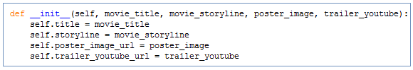

Abstraction & Functions
We used a variety of pre-defined functions like “webbrowser.open()”, “time.ctime()”, and “time.sleep()” in creating the Python projects. We don’t know how these functions work behind the scenes or the details around it. The hiding of detail behind documentation in programming is called “Abstraction”.
Abstraction is very powerful because it allows us the ease of using these functions simply by reading their documentation and applying it to our program. It allows us to focus on the program we want to write.
The Python Standard Library contains the list and documentation of functions. Below are a few examples.
- Inside Python is a file named webbrowser. Inside webbrowser is a function called “open” which allowed us to open a link to a website
- There is also a module called “time” and time has several functions defined inside of it like "ctime" which gives the current time and "sleep" which suspends program animation for a given length of time in seconds.
- os.listdir() will list files within the given directory
Use Classes
In the previous lesson, we created projects using functions and used codes by writing them one line at a time. If we need to use that program for another object, we’d have to copy it and give it new parameter values. If we need to make changes, we’ll have to make it on all copies which is not very efficient. We need a way of making copies of a template without making multiple files which in programming is called a “class”.
- Within the Python library, there is a file named “turtle” which has a class called “Turtle”
- In the project, we used it by assigning it to an instance named “brad” brad = turtle.Turtle()
- “brad” now has access to all of the methods that are inside class turtle like forward() and right()
brad.right(90)
- Neatly packaged box that puts things together very well and allows as to write codes like turtle.Turtle() with brackets which looks like we’re calling a function
- It calls the “init” function defined inside the class which stands for initialize def __init__():
- “init” creates space in memory for a new instance or object of the class
- In the turtle example, “brad” is an instance of the class
- Multiple instances of the class can be created
- webbrowser.open(url) is a function which calls a function to open the url in the browser
- turtle.Turtle() is a class which calls the “init” function first to initialize or create space in memory which did not exist before. This makes it possible to have multiple instances of the class.
- Class is a blueprint or template which has information/instructions defined inside of it.
- Instance of a class is an object that can do the things that were defined inside the class.
- Class is like template from which you can create a number of objects.
Make Classes
- To create a class in Python, we create a file (i.e. media.py) inside a folder (i.e. movies)
- To define a class, use the keyword “class” and the name of the class, i.e. class Movie():
- When naming classes, follow the guidelines in the Google Python Style Guide
- Create another file in the same folder. This file will be used to call the class that was created in the other file (media.py).
- Although the entire codes can be written in the same file, it is a good practice to keep the class definition in one file and to use/call the class from another file.
- Use “import media” in the new file. This means you want to use the contents of the file media.py
- media.Movie() means you want to use the class Movie() which resides in the file media.py
- You can then assign the class to an instance (i.e. toy_story = media.Movie()
- When the class media.Movie() is called, the init function will create a space in memory for the new instance (toy_story)
- The init function is called a constructor because it constructs space in memory for the new instance or object .
- It is defined by using “def __init__():”
- The two underscores before and after “init” are a way for Python to tell the programmers that the name “init” is reserved in Python and is a special function or method (creates space in memory).
- It takes a few pieces of information or arguments that need to be remembered inside the class. The first one is the keyword “self” which is the object being created (or itself).
- Additional arguments are initialized by creating variables and assigning the corresponding arguments being received from the init function to the variable. See example below. 
- Every object/instance created using the defined “class” has memory space set aside for each instance. Within that space, each instance has its own copy of the variables. Because these variables are unique to each instance of class movie, these variables are called instance variables.
- Besides variables, functions can also be defined inside the class. A function that is defined inside a class and is associated with an instance is called an instance method.
Class – class keyword allows us to make classes. Think of it as a blueprint. A class can have both data and methods.
Instance – an object created using class; can create multiple instances of a class (i.e. toy_story and avatar).
Constructor (i.e. function init) – when we create an instance of a class, the classes constructor gets called. This is essentially the init method inside the class. It is here that we initialize all of the data associated with the instance. The constructor uses the keyword “self”.
Self – refers to itself or the instance in question (i.e. toy_story). So when the instance toy_story is getting created, self is toy_story.
Instance Variables – all the variables associated with a specific instance. These are unique to an object and can be accessed using the self keyword inside the class and the instance name outside of the class.
Instance Methods – all of the functions inside the class that are associated with an instance and have the first argument as self are called instance methods.

- Variables that are shared by the multiple instances of the class. Sometimes it does not make sense to create separate variables for each instance when the values are the same for all instances.
-
Use ALL CAPS when creating this constant variable per recommendation by the Google Style Guide, i.e.
VALID_RATINGS = ["G", "PG", "PG-13", "R"] -
In Python, all classes come with pre-existing class variables, below are some of the variables:
__doc__ (i.e. turtle.Turtle.__doc__)
__name__ (i.e. media.Movie.__name__)
__module__ (i.e. media.Movie.__module__)